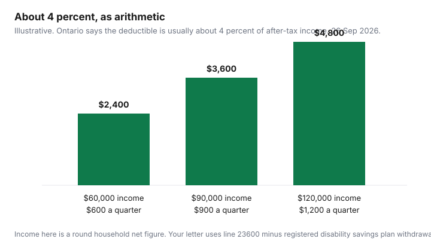

Healthcare · Canada
Ontario's Trillium Drug Program: How the Income-Based Deductible Works and When to Apply
Trillium is Ontario’s income-based drug program for households whose prescription costs are high relative to what they keep after tax. It is not a workplace plan, and it is not a waiver of the deductible. You pay the deductible in quarterly pieces. After that, the page says you pay up to $2 for each eligible drug that is filled or refilled, until the program year ends. This page walks through the arithmetic Ontario publishes and the paperwork around it. It is education. The confirmation letter is the decision, and the pharmacist is the person who submits the claim. Nothing here tells you which drug to take.
Key takeaways
- Apply if you live in Ontario with a valid health card, are not already on the Ontario Drug Benefit, your insurance does not pay 100 percent, and drug costs are about 4 percent or more of after-tax household income. Page updated 11 February 2026.
- The deductible is usually about 4 percent of household net income (line 23600, minus line 12500 registered disability savings plan withdrawals). The letter states the dollar amount.
- That annual figure is split into four equal quarters: August–October, November–January, February–April, May–July. Unpaid deductible carries forward only inside the same program year.
- After the deductible, you pay up to $2 per eligible fill until 31 July. Private-plan payments do not count toward the deductible. Your out-of-pocket share can.
- The worked rows at $60,000, $90,000, and $120,000 are illustrative arithmetic on “about 4 percent,” not a calculator result.
Who Trillium is for: high drug costs relative to household income, with or without private coverage
The Ontario page “Get help with high prescription drug costs,” updated 11 February 2026, says you should apply if you live in Ontario, have a valid Ontario health card number, do not already qualify for the Ontario Drug Benefit (the example given is enrolment in a program such as Ontario Works), do not have an insurance plan that pays 100 percent of your drugs, and spend about 4 percent or more of your after-tax household income on prescription-drug costs. Private coverage that pays part of the bill is not a bar. Coverage that pays every dollar is. Someone already receiving the Ontario Drug Benefit through another door does not use Trillium as a second public plan.
You apply as a household. If you live alone, or only with people who are not in the household definition, you can apply for yourself. Otherwise the page says you include a spouse: a person you are married to, or a person you have lived with in a conjugal relationship for at least a year, or a person you live with conjugally and with whom you are parents of a child, or a person with whom you have a cohabitation agreement under section 53 of the Family Law Act. You also include another person you live with when one of you is a parent, grandparent, or legal guardian of the other and one is dependent for support, including a person under 25 who would be eligible for OHIP+ and is dependent. The letter lists who was included. If the household is wrong, the income and the deductible are wrong.
What is covered is the Ontario Drug Benefit list: the page says more than 5,900 drug products, plus almost 1,500 additional products through the Exceptional Access Program when the criteria are met. A drug your plan pays and the provincial formulary excludes is not a Trillium drug. Search the covered list, or ask the pharmacist, before you assume a specialty product will count. The workplace drug guide is the formulary and prior-authorization sequence for the private plan. Trillium does not replace that sequence.
The deductible is about 4% of household net income, paid in quarterly instalments
The page says the deductible is what you pay out of pocket on the first eligible drugs you buy before coverage begins. For most people it equals about 4 percent of household income after taxes. Household income is the net income reported to the Canada Revenue Agency for the previous tax year, the amount on line 23600 of the notice of assessment, minus withdrawals from a Canadian registered disability savings plan on line 12500. “About 4 percent” is the province’s phrase. It is not a promise that every file lands on a round number. The letter is the number you pay.
Only money household members spent out of pocket on eligible drugs counts. When private insurance, a drug company, or a discount card pays all or part of the cost, that paid portion does not count. This is the line people miss. An 80 percent workplace plan does not push 80 percent of the receipt toward Trillium. It pushes your 20 percent, and only if the drug is eligible and the amount is truly unpaid by anyone else. The coordination guide matters when two private plans exist, because the second plan may pay part of what the first left behind. What is still unpaid after both plans is the candidate for the deductible. Ask the pharmacist how the private plan and Trillium are billed. Do not assume they stack because you mailed an application.
The year is split so you do not pay the whole deductible on 1 August. The annual amount is divided into four equal quarterly deductibles, and the year into four quarters: August, September, October; November, December, January; February, March, April; May, June, July. At the start of each quarter you pay eligible drugs until that quarter’s amount is met. Coverage then runs to the end of that quarter. The page’s own example: a $25 quarterly deductible and only $20 of drugs in the quarter means $5 carries forward, so the next quarter is $30. Unpaid deductible carries only through the fourth quarter. It does not roll into the next program year.
After the deductible: $2 co-pays and how the benefit year runs
Once the deductible is paid, the page says you pay up to $2 for each drug that is filled or refilled until the end of the program year. “Up to $2” is a ceiling, not a flat $2 on every receipt. A fill can be less. The program year is 1 August to 31 July, which is the same year the senior Ontario Drug Benefit deductible uses. It is not the calendar year, and it is not your employer’s benefit year. If your workplace plan resets on 1 January, you can be in two different “years” in the same winter. Write both dates down before you decide a maximum has reset.
A longer supply changes how often the co-pay appears. The page says people on Trillium can ask for a three-month supply of some drugs used for diabetes, high cholesterol, or high blood pressure, so the co-pay is paid less often. The pharmacist confirms which drugs qualify. That is a supply question, not a reason to stockpile. Travel inside Ontario can use a prescription transfer when refills remain, you are not filling more than 10 days early, and the drug is not a controlled drug, a controlled-drug preparation, or a narcotic. The page gives oxycodone, Dilaudid, Xanax, and diazepam as examples of drugs that do not transfer that way.
Travel outside Ontario is narrower. Prescriptions filled outside the province are not covered. Once in the program year you may get a larger supply: if you have less than 30 days on hand, a travel supply of up to 200 days, and only between 1 August and 1 February; if you have more than 30 days on hand, a 100-day supply. You give the pharmacist a letter you write, confirming you will be away more than 100 days, or a copy of a travel-insurance policy showing a trip of between 100 and 200 days. You still pay the deductible or the co-pay on the extra supply. Travel medical insurance is a different product. It does not replace this rule.
Using Trillium to top up a workplace plan with an annual or lifetime maximum
A workplace plan with a $2,000 drug maximum, or a lifetime maximum on a specialty drug, can leave a household paying cash partway through the year. Trillium is one public program that may apply to eligible drugs after your own spending meets the quarterly deductible. It does not raise the workplace maximum. It does not pay the portion the workplace plan already paid. And it does not pay a drug that is off the Ontario list.
Use a labelled sketch, not a quote. Suppose a household’s letter says the annual deductible is $2,400, so each quarter is $600. Suppose, illustratively, the household’s eligible drug spending in a quarter is $2,000 and the workplace plan pays 80 percent, which is $1,600. The household pays $400. Only that $400 can count toward the $600 quarterly deductible. The quarter is not met. Next quarter the unpaid $200 carries forward, and the household starts at $800, using the page’s carry-forward logic on these made-up dollars. If the plan then hits an annual maximum and stops paying, later out-of-pocket eligible fills count in full, still only up to what you paid. Change any of those inputs and the sketch changes. The gap-insurance guide is the private-product alternative. Trillium is not an insurer you shop.
Tell the prescriber and the pharmacist that you have applied or been approved, so they can aim at a drug the Ontario Drug Benefit list actually covers. Enrolment is what lets the pharmacy submit to the program. A receipt you paid before enrolment can still be sent in, on the rules below, for the right program year. Do not wait for a denial letter from the workplace plan if you already know the year’s costs will clear the income test. The page says to apply if you spend about 4 percent or more. Households facing costs in the thousands are the people that sentence is written for. The $3,000 lead in some explainers is not a threshold Ontario printed, so it is not used as one.
How to apply, renew and report income changes
The program year runs from 1 August to 31 July. Apply by 30 September if you want to be considered for reimbursement of eligible drugs from the previous program year. The page points you to the Trillium application on the Ontario Drug Benefit online applications site, and to the Trillium guide for help completing it. Without a computer, request a paper form by phone at 416-642-3038 in Toronto or 1-800-575-5386, or by email at trillium@ontariodrugbenefit.ca. After enrolment, a letter states the deductible and names the household. Renewal is automatic if you file income taxes on time. You get a letter each year. If you do not file, do not assume the deductible refreshed.
If household income changes by 10 percent or more, you can ask for a recalculation on the Annual Deductible Re-Assessment Request form, with the documents the guide describes. The new deductible takes effect at the beginning of the quarter in which it is recalculated. The page’s example: a reassessment in June, which is in the fourth quarter, is effective 1 May, the start of that quarter. It is not applied backward to earlier quarters. The ministry checks the income against Canada Revenue Agency information when that year’s tax information exists, so the figures have to be accurate. If income changes again after you submit the request, tell them.
Receipts go through the Ontario Drug Benefit receipt submission form, or by mail to Trillium Drug Program, Ministry of Health, P.O. Box 337, Station D, Etobicoke ON M9A 4X3. Send the official prescription receipt signed by a pharmacist, not a cash-register slip or a clinic invoice. If the official receipt is lost, the pharmacist can prepare a Patient Medical Expense Report with a pharmacy stamp and a pharmacist’s signature, showing the same fields: recipient, pharmacy, prescription number, drug name and drug identification number, date, quantity, total paid, drug cost, and dispensing fee. Everything has to arrive no later than three months after the program year ends, which the page states as 31 October. A receipt that misses that date does not become a deductible payment because you still have the bag.
Worked examples at $60k, $90k and $120k household incomes
These rows multiply the page’s “about 4 percent” by three round incomes and divide by four. They are illustrative. They ignore the line 12500 subtraction, they ignore that “about” is not “exactly,” and they are not the letter. A household at $60,000 of net income times 0.04 is $2,400 a year, $600 a quarter. At $90,000, $3,600 a year and $900 a quarter. At $120,000, $4,800 a year and $1,200 a quarter. After the deductible is met, the co-pay is up to $2 per eligible fill for the rest of that quarter, and again after each later quarter’s deductible. If your letter says something else, use the letter.
| Household net income (illustrative) | Annual deductible at 4 percent | Quarterly instalment | After the deductible |
|---|---|---|---|
| $60,000 | $2,400 | $600 | Up to $2 per eligible fill |
| $90,000 | $3,600 | $900 | Up to $2 per eligible fill |
| $120,000 | $4,800 | $1,200 | Up to $2 per eligible fill |

The tax-credit guide is the separate question of whether out-of-pocket drug spending also belongs on a medical-expense claim. Trillium enrolment does not file the return. Keep the official pharmacy receipt either way. The dispensing fee on that receipt is its own comparison, covered in the fee guide, and the choice of interchangeable product is covered in the generic guide. None of those steps changes the percentage in the letter.
Sources & date stamps
- Ontario, get help with high prescription drug costs. Updated 11 February 2026. Eligibility, household rules, about 4 percent, line 23600 and line 12500, quarterly schedule and the $25 carry-forward example, co-pay up to $2, program year 1 August to 31 July, 30 September and 31 October deadlines, 10 percent income change, three-month supplies, and out-of-province travel supply rules. Phones 416-642-3038 and 1-800-575-5386. Opened 26 Sep 2026.
- Ontario, get coverage for prescription drugs. Opened 26 Sep 2026 for the wider Ontario Drug Benefit context. Trillium figures above are from the high-cost page, not inferred from the senior co-payment.
- The private-plan sketch ($2,000 in a quarter, 80 percent paid by a plan) is labelled illustrative. It is not a household’s claim.
- Dropped: any statement that $3,000 a year is an eligibility line. Ontario’s line is “about 4 percent or more” of after-tax household income, not a fixed dollar test.
Frequently asked questions
Who is eligible for the Trillium Drug Program?
Ontario’s page, updated 11 February 2026, says you should apply if you live in Ontario, have a valid Ontario health card, are not already on the Ontario Drug Benefit through a program such as Ontario Works, do not have insurance that pays 100 percent of your drugs, and spend about 4 percent or more of your after-tax household income on prescription drugs. You apply as a household, with a spouse and certain dependent family members included. The confirmation letter, not this page, is the enrolment decision.
How is the Trillium deductible calculated?
For most people the page says the deductible equals about 4 percent of household income after taxes, using net income on line 23600 of the notice of assessment for the previous tax year, minus registered disability savings plan withdrawals on line 12500. Only money the household paid out of pocket for eligible drugs counts; amounts a private plan, a drug company, or a discount card paid do not. The letter states the dollar deductible.
Can I use Trillium if I have private insurance?
Yes, if that insurance does not pay 100 percent of your drugs and you are not already an Ontario Drug Benefit recipient. Trillium can sit beside a workplace plan that has an annual or lifetime maximum, because only your out-of-pocket eligible spending counts toward the deductible and money the plan paid does not. Tell the pharmacist you are enrolled so claims are submitted in the right order. This is not a second copy of the plan booklet.
How often do I pay the deductible?
The annual amount is split into four equal quarterly amounts: August to October, November to January, February to April, and May to July. Each quarter you pay for eligible drugs until that quarter’s amount is met, then the co-pay applies until the quarter ends. An unpaid quarterly balance carries forward within the program year and does not carry into the next program year.
When should I apply or renew?
The program year is 1 August to 31 July, and you should apply by 30 September to be considered for reimbursement of eligible drugs from the previous program year. Once enrolled, the household renews automatically if income taxes are filed on time, and a letter confirms the new deductible. If household income changes by 10 percent or more, you can ask for a reassessment, and receipts for the year have to reach the program by 31 October.